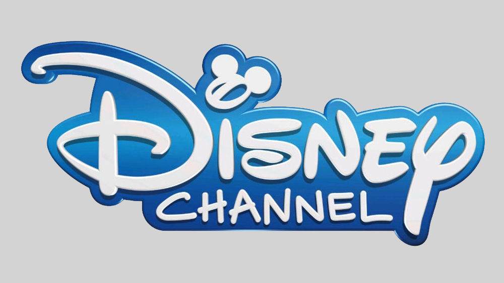

History
Walt Disney was created by a man named Walt Disney. He came to California from Kansas City during the summer of 1923. Disney initially created
a little girl cartoon, known as Alice's Wonderland, and became super successful from the film and started the "Alice Comedies".
On October 16, 1923, marked the date the Disney company, formerly known as the Disney Brothers Cartoon Studio, was started (D23).
Over the years, Disney was able to move his staff to a new facility, Hyperion Studio, in Hollywood and had developed a new character
named Oswald the Lucky Rabbit. After a couple years, Walt came up with a new character, as we know today, Mickey Mouse in the cartoon
Steamboat Willie (D23).
Songs
- I'll Make A Man Out of You
- Reflection
- Almost There
- Ma Belle Evangeline
- Hakuna Matata
- You've Got a Friend in Me
- When Will My Life Begin
- See the Light
- Colors of the Wind
- Circle of Life
- Beauty and the Beast
- A Whole New World
- Go the Distance
- I Won't Say I'm in Love
- Speechless
- Cloud 9
- Had Me @ Hello
- Something Real
- Determinate
- You'll be In My Heart
- Once Upon a Dream
- Riverbed
- Part of Your World
- Cruella De Vil
- Let It Go
- Can You Feel the Love Tonight
- Be Our Guest
- You're Welcome
- Start of Something New
- A Spoonful of Sugar
Shows
 (Google)
- Boy Meets World
- That's So Raven
- Even Stevens
- Kim Possible
- Lizzie McGuire
- Phil of the Future
- The Proud Family
- The Suite Life of Zack & Cody
- The Suite Life on Deck
- Wizard's of Waverly Place
- Sonny with a Chance
- Good Luck Charlie
- Hannah Montana
- Cory in the House
- Jonas L.A.
- Shake It Up
- Lab Rats
- Mighty Med
- A.N.T. Farm
- Jessie
- Austin & Ally
- Liv and Maddie
- Girl Meets World
- I Didn't Do It
- K.C. Undercover
Movies
 (Google)
(Google)
| The Princess Diaries 1, 2 |
Beauty and the Beast (+ Live Action) |
Fantasia |
The Princess and the Frog |
| Lemonade Mouth |
Cinderella 1, 2 , 3 (+ Live Action) |
Big Hero 6 |
The Hunchback of Notre Dame 1, 2 |
| Zapped |
Aladdin (+ Live Action) |
Inside Out |
Hercules |
| How to Build a Better Boy |
Mulan (+ Live Action) |
Zootopia |
Peter Pan 1, 2 |
| Descendants 1, 2, 3 |
Lion King (+ Live Action) |
Up |
The Fox and the Hound |
| Wendy Wu |
The Jungle Book (+ Live Action) |
Treasure Island |
The Little Mermaid |
| Cloud 9 |
Lady and the Tramp (+ Live Action) |
Tarzan 1, 2 |
Pocahontas |
Zombies 1, 2 |
Dumbo (+ Live Action) |
Toy Story 1, 2, 3, 4 |
Frozen 1, 2 |
| Girls vs. Monsters |
Alice in Wonderland (+ Live Action) |
Cars 1, 2, 3 |
Moana |
| Adventures in Babysitting |
Maleficent, Maleficent: Mistress of Evil |
The Emperor's New Groove |
Tangled |
| Into the Woods |
Cruella |
Ratatouille |
Brave |
|
A Wrinkle in Time |
The Chronicles of Narnia: The Lion, the Withc and the Wardrobe,
Prince Caspian, The Voyage of the Dawn Treader, The Silver Chair |
Finding Nemo, Finding Dory |
Bolt |
| Hamilton |
Pirates of the Carribean: The Curse of the Black Pearl, Dead Man's Chest,
At World's End, On Stranger Tides, Dead Men Tell No Tales,
Tales of the Code: Wedlocked |
Chicken Little |
Raya and the Last Dragon |
| Twitches 1, 2 |
Mary Poppins, Mary Poppins Returns |
Atlantis: The Lost Empire |
Luca |
Angles in the Outfield |
The Parent Trap |
Wall-e |
Onward |
| High School Musical 1, 2, 3 |
Enchanted |
Teen Beach Movie 1, 2 |
Wreck It Ralph 1, 2 |
References
Custodio, Spencer. “Will Disneyland Reopen Anytime Soon?” Voice of OC, 8 Dec. 2020, voiceofoc.org/2020/09/will-disneyland-reopen-anytime-soon/.
“Disney Channel Logo.” Google Search, Google,
www.google.com/search?q=disney%2Bchannel%2Blogo&tbm=isch&ved=2ahUKEwidiYvWq-HyAhWsgU4HHSgJAD4Q2-cCegQIABAA&oq=disney%2Bchannel%2Blogo&gs_lcp=CgNpbWcQAzIICAAQgAQQsQMyBQgAEIAEMgUIABCABDIFCAAQgAQyBQgAEIAEMgUIABCABDIFCAAQgAQyBQgAEIAEMgUIABCABDIFCAAQgAQ6BggAEAcQHlDHmQFYx6cBYL-sAWgAcAB4AIABbogB_QSSAQM2LjKYAQCgAQGqAQtnd3Mtd2l6LWltZ8ABAQ&sclient=img&ei=glAxYZ3APKyDuuoPqJKA8AM&bih=818&biw=1536&rlz=1C1CHBF_enUS917US917#imgrc=aqCi6jnE7cEdTM.
“Disney History.” D23, 17 May 2019, d23.com/disney-history/.
“Disney Movie Logos.” Google Search, Google,
www.google.com/search?q=disney%2Bmovies%2Blogo&rlz=1C1CHBF_enUS917US917&tbm=isch&source=iu&ictx=1&fir=ql2CzsFE-ucSMM%252CwMeEBcEVpzwj6M%252C_&vet=1&usg=AI4_-kRhMiwClEzrpuWNsjXcm4990OgGJw&sa=X&ved=2ahUKEwjhtdaKrOHyAhXR6Z4KHUZVCQ0Q9QF6BAgJEAE&biw=1536&bih=818#imgrc=xW_pk_3TntVO-M.
“DISNEYLAND California Theme Parks.” Disneyland Theme Parks, Disneyland Park California Adventure, Werner Technologies ,
2021, www.wdwinfo.com/disneyland/disneyland-theme-parks.htm.
“Disneyland, Anaheim, CA.” California Beaches, www.californiabeaches.com/attraction/disneyland/.
“List of Walt Disney Pictures Films.” Wikipedia, Wikimedia Foundation,
16 Aug. 2021, en.wikipedia.org/wiki/List_of_Walt_Disney_Pictures_films.
“Magic Kingdom Park Hours.” Discover Disney World Vacation Packages | Walt Disney World Resort,
2021, disneyworld.disney.go.com/plan/my-disney-experience/vacation-packages/?ef_id=Cj0KCQjw7MGJBhD-ARIsAMZ0eeuR2JYuZ2jxWXuUkzPvAX2nHz4xKzZin7_z-WHpiD2OmIOKyeJ7IP0aAsfGEALw_wcB%3AG%3As&s_kwcid=AL%215060%213%21445555758900%21p%21%21g%21%21wdw&CMP=KNC-FY21_WDW_TRA_DOM-EXCFL_W365_SCP_SCP_WDWBrand_Phrase%7CG%7C5211013.RR.AM.01.01%7CMYBUBPO%7CBR%7C445555758900&keyword_id=kwd-92812795%7Cdc%7Cwdw%7C445555758900%7Cp%7C5060%3A3%7C&gclid=Cj0KCQjw7MGJBhD-ARIsAMZ0eeuR2JYuZ2jxWXuUkzPvAX2nHz4xKzZin7_z-WHpiD2OmIOKyeJ7IP0aAsfGEALw_wcB.
“Walt Disney World.” Wikipedia, Wikimedia Foundation, 1 Sept. 2021, en.wikipedia.org/wiki/Walt_Disney_World#History.
“Walt Disney WORLD'S 50th Anniversary Party Starts October 1.” The Indian Express, 23 June 2021, indianexpress.com/article/lifestyle/destination-of-the-week/walt-disney-worlds-50th-anniversary-party-starts-october-1-7371857/.
Back to top
 (Custodio)
(Custodio)
 (The Indian Express)
(The Indian Express)